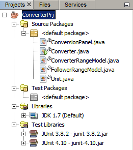
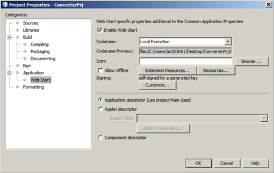
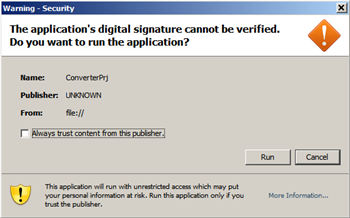
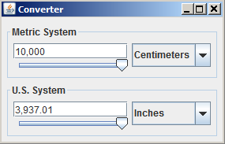
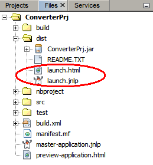
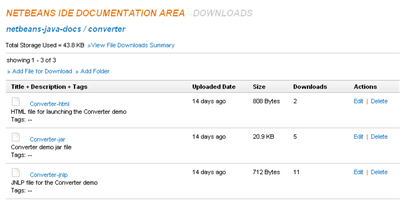

在 NetBeans IDE 中启用 Java Web Start
按照本教程中的步骤进行操作，您将学习如何配置应用程序以使其可以使用 Java Web Start 进行部署。Java Web Start 是一项通过单击从 Web 浏览器运行 Java 应用程序的技术。简而言之，Java Web Start 就是另外一种部署 Java 应用程序的方法。
在本教程中，将使用一个简单的 Java 应用程序，这是一个转换器，可在公制和美制单位间转换距离测量值。此样例应用程序的代码可供您下载，您需要配置项目设置才能使用 Java Web Start 启动该应用程序。您可以使用任何可用的远程 Web 服务器来上载应用程序文件。
学完本教程大约需要 20 分钟。
目录

要学完本教程，您需要具备下表所列的软件和资源。
打开项目
您需要先在 IDE 中打开转换器应用程序。该应用程序已打包为 NetBeans IDE 项目，因此，您只需在 IDE 中打开该项目即可。
该转换器演示的源代码最初是在 Java 教程中提供的。要了解如何编写该小型应用程序，请参见 Java 教程的使用 Swing 组件部分。在本教程中，您将学习如何配置项目设置，以便在 Web 浏览器中启动此 Java 应用程序。
- 下载转换器演示应用程序 zip 档案文件。
- 将该档案文件解压缩到系统上的某个位置。
- 在 IDE 的主菜单中，选择 "File"（文件）> "Open Project"（打开项目）。
ConverterPrj 项目在 "Projects"（项目）窗口中打开。您可以展开该项目的节点以查看源文件。

配置项目以启用 Java Web Start
使用 Java Web Start，用户可以通过在 Web 浏览器中单击指向 Java 应用程序的 JNLP 文件的 HTML 链接，启动该应用程序。JNLP 文件是一个特殊的配置文件，可指示 Java Web Start 下载、缓存并运行 Java 应用程序。要使用 Java Web Start 运行应用程序，客户端计算机上安装有兼容版本的 Java 运行时环境 (JRE) 即可满足要求。无需安装 Java 开发工具包 (JDK)。
要使 Java 应用程序能够使用 Java Web Start 运行，您需要配置 IDE 应如何构建项目的属性。在项目属性中启用 Java Web Start 后，IDE 将自动创建一个 JNLP 文件和一个 HTML 页（其中包含指向 JNLP 文件的链接）以及 JAR 文件。
配置项目以启用 Java Web Start
在本练习中，将对项目进行配置，使其启用 Java Web Start，然后在本地测试其执行情况。
- 右键单击 ConverterPrj 项目节点，然后选择 "Properties"（属性）。
- 在 "Categories"（类别）下，选择 "Web Start"，然后选中 "Enable Web Start"（启用 Web Start）复选框。
- 初次在本地运行该应用程序时，从 "Codebase"（代码库）下拉列表中选择 "Local Execution"（本地执行）选项。
"Codebase Preview"（代码库预览）字段显示了本地应用程序文件的路径。
- 单击 "Customize"（定制），以打开 "Signing"（签名）对话框。选择 self-sign by generated key（使用生成的密钥自签名）选项。
构建项目时自动构建的证书将对应用程序 JAR 文件进行签名。使用自签名的证书，应用程序可以访问本地运行的常规应用程序所能够访问的计算机资源。例如，自签名的证书使应用程序可以访问本地文件和网络。
- 使 "Mixed Code"（混合代码）下拉列表中的 "Enable Software Protections"（启用软件保护）保持选中状态，然后单击 "OK"（确定）。
- （可选）在 "Project Properties"（项目属性）对话框中，选择 "Application"（应用程序）面板，然后更改应用程序标题和供应商名称。
- 单击“确定”。关闭“项目属性”对话框。

在 IDE 中编译并运行 Java Web Start 应用程序
编译并运行应用程序以在本地测试 Java Web Start：
- 在 "Projects"（项目）窗口中选择 ConverterPrj 项目节点，然后在主菜单中选择 "Run"（运行）> "Set Main Project"（设置为主项目）> "ConverterPrj"。
- 选择 "Run"（运行）> "Run Main Project"（运行主项目），或者按 F6 键。
IDE 将对源代码进行编译，并且您应该看到表明 Java 正在启动的闪屏，以及询问您是否可以执行已签名应用程序的警告窗口。

- 在警告窗口中选中信任其内容的复选框，然后单击 "Run"（运行）。
将启动转换器应用程序。 
了解 Java Web Start 文件
现在，让我们详细了解一下构建过程中由 IDE 创建的 Java Web Start 文件（"Run"（运行）> "Build Project"（构建项目））。
要查看这些文件，请在 IDE 中打开 "Files"（文件）窗口，然后展开 dist 文件夹。

对于 Java Web Start，创建了以下两个附加文件：
- launch.jnlp - 这是一个 XML 文件，其中包含一些特殊的元素和属性，用于指示浏览器如何运行应用程序。JNLP 表示 Java Network Launching Protocol（Java 网络启动协议）。JNLP 文件的属性可以包含 JNLP 规范版本、应用程序标题、供应商名称以及指向应用程序 JAR 文件的链接等。
- launch.html - 这是一个自动生成的 HTML 页，其中包含指向 JNLP 文件的链接。用户单击此链接可通过 Java Web Start 启动应用程序。生成的此 HTML 文件还包含对广泛可用的 Java 部署工具包 (deployJava.js) 的已注释引用，该工具包提供了 JavaScript 函数以避免出现浏览器兼容性问题。在此处可找到有关 Java 部署工具包的详细信息。
您可以尝试执行以下操作：在 IDE 外部，导航至系统中的 launch.html 文件，在浏览器中打开该文件，然后单击其中包含的链接以启动转换器演示应用程序。
从远程位置运行应用程序
在验证可成功使用 Java Web Start 从本地源启动应用程序后，让我们将其上载到远程位置并从该远程位置启动应用程序。
注：为了使用 Java Web Start 在 Web 上部署应用程序，您所用的 Web 服务器应当能够处理 JNLP 文件。必须将 Web 服务器配置为将 JNLP 文件识别为应用程序，即，应将 JNLP 的 MIME 类型添加到 Web 服务器的配置中。否则，扩展名为 JNLP 的文件将被识别为普通的文本文件。有关 Web 服务器配置的详细信息，请参见 Java Web Start 指南。
修改 JNLP 文件
要从 Web 启动应用程序，您需要在 JNLP 文件中提供指向 Web 上应用程序源文件的链接。
- 右键单击 ConverterPrj 项目节点，选择 "Properties"（属性），然后在 "Categories"（类别）下选择 "Web Start"。
- 选择 "User Defined"（用户定义的）作为代码库。
- 在 "Codebase Preview"（代码库预览）字段中，输入要将源文件上载到的 URL。
例如，http://mydomain.com/myuser/converter/。
- 在 "Project Properties"（项目属性）窗口中单击 "OK"（确定）。
- 右键单击 ConverterPrj 节点，然后选择 "Clean and Build"（清理并构建）。
此 IDE 命令将删除所有先前编译的文件和构建输出，重新编译应用程序，然后使用当前设置构建输出文件。
上载源文件
现在，我们要将源文件上载到服务器，然后从该服务器运行应用程序。请注意，此部分中引用的所有用户凭证和项目名称均应替换为您的个人数据。
- 登录至 Web 服务器，然后导航至项目的下载区域。
在我们的案例中，项目标题为 "NetBeans IDE Documentation Area"
- 将以下本地文件从项目的 dist 文件夹上载到项目的目录：ConverterPrj.jar、launch.html 和 launch.jnlp。
下图显示了 "NetBeans IDE Documentation Area" 项目的下载区域。

- 现在，运行应用程序。在浏览器窗口中，输入 launch.html 文件的 URL，然后单击 "Launch the application"（启动应用程序）链接。
将使用 Java Web Start 启动转换器应用程序。
小结
在本简短教程中，我们介绍了如何轻松地使用 NetBeans IDE 使 Java 应用程序可在 Web 上部署。这只是其中一种部署 Java 应用程序的方法。
另请参见
有关使用 Java Web Start 的更多信息，请参见以下资源：
{kind=link}
{kind=link}
{kind=link}